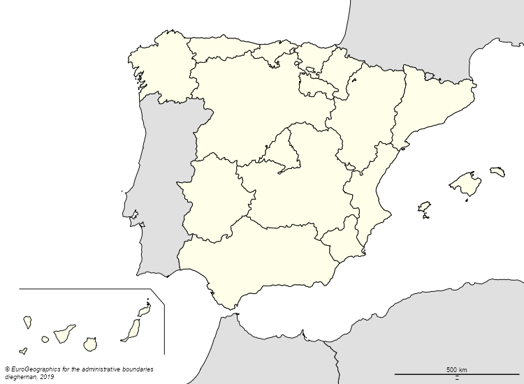
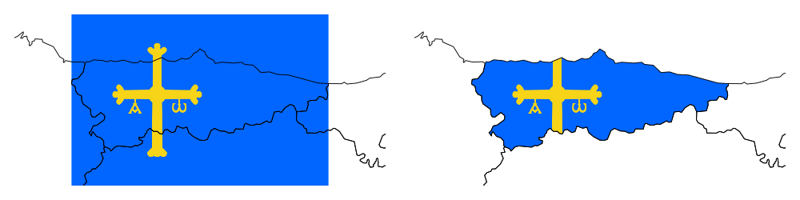
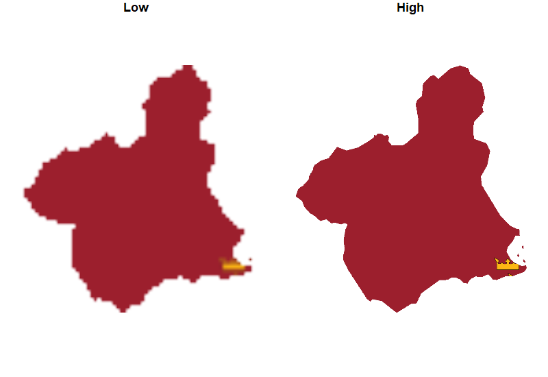
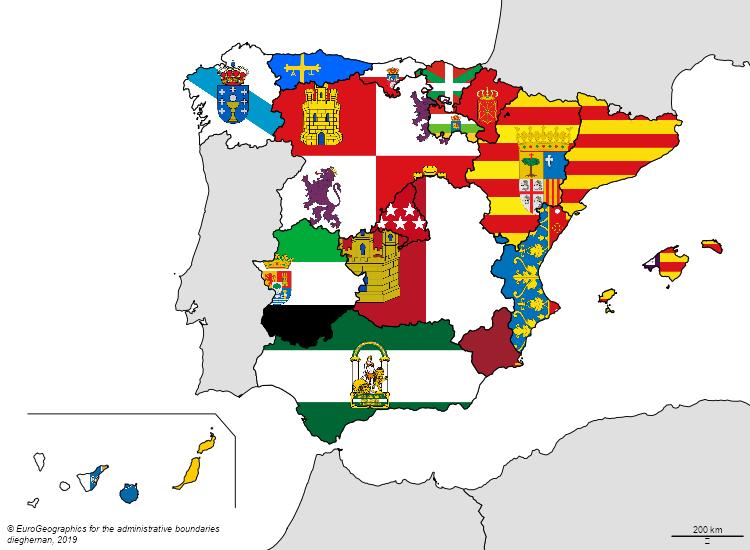

Updated 29 december 2020: All these pieces of work are already available on cartography >v.2.4.0 on functions getPngLayer. Just install it via install.packages("cartography"). A dedicated blog post with examples on this link.
Want to use a flag (or any *.png file) as a background of your map? You are in the right post. I am aware that there are some R packages out there, but we focus here in the option provided by cartography::getPngLayer(), that basically converts your image into a raster (see also this article of Paul Murrell, “Raster Images in R Graphics” (The R Journal, Volume 3/1, June 2011)).
Required R packages
library(dplyr)
library(sf)
library(cartography)
library(mapSpain)
library(giscoR)
Choosing a good source for our shape
In this post I am going to plot a map of Spain with its autonomous communities (plus 2 autonomous cities), that is the first-level administrative division of the country. Wikipedia shows an initial map identifying also the flag of each territory.
For that, I will use mapSpain, that uses information from giscoR, whose source is the geodata available in Eurostat. I would also use giscoR to get the world around Spain.
Spain <- esp_get_ccaa(epsg = 3857, res = 3)
World <- gisco_get_countries(epsg = 3857, res = 3)
bboxcan <- esp_get_can_box(epsg = 3857)
# Plot
par(mar = c(0, 0, 0, 0))
plot(st_geometry(Spain),
col = NA,
border = NA,
bg = "#C6ECFF"
)
plot(st_geometry(World),
col = "#E0E0E0",
bg = "#C6ECFF",
add = T
)
plot(st_geometry(Spain), col = "#FEFEE9", add = T)
layoutLayer(
title = "",
frame = FALSE,
scale = 500,
sources = gisco_attributions(),
author = "dieghernan, 2019",
)
plot(bboxcan, add = TRUE)

Now we have it! A nice map of Spain with a layout based on the Wikipedia convention for location maps.
Loading the flag
As a first example, I chose Asturias to build my code. So the goal here is to create a RasterBrick from the desired *.png file, add the necessary geographical information and use the shape of Asturias to crop the flag.
# 1.Shape---
shp <- Spain %>% filter(ccaa.shortname.es == "Asturias")
# 2.Get flag---
# Masked
url <- "https://upload.wikimedia.org/wikipedia/commons/thumb/3/3e/Flag_of_Asturias.svg/800px-Flag_of_Asturias.svg.png"
flagnomask <- getPngLayer(shp, url, mask = FALSE)
flagmask <- getPngLayer(shp, url, mask = TRUE)
opar <- par(no.readonly = TRUE)
par(mar = c(1, 1, 1, 1), mfrow = c(1, 2))
pngLayer(flagnomask)
plot(st_geometry(Spain), add = T)
# 4.Mask---
pngLayer(flagmask)
plot(st_geometry(Spain), add = T)

par(opar)
Pro tip: Use high-quality *.png, otherwise the plot would look quite poor. Here I show an extreme example.
MURshp <- Spain %>% filter(ccaa.shortname.es == "Murcia")
MURLow <- getPngLayer(
MURshp,
"https://upload.wikimedia.org/wikipedia/commons/thumb/a/a5/Flag_of_the_Region_of_Murcia.svg/100px-Flag_of_the_Region_of_Murcia.svg.png"
)
MURHigh <- getPngLayer(
MURshp,
"https://upload.wikimedia.org/wikipedia/commons/thumb/a/a5/Flag_of_the_Region_of_Murcia.svg/1200px-Flag_of_the_Region_of_Murcia.svg.png"
)
# Plot and compare
opar <- par(no.readonly = TRUE)
par(mfrow = c(1, 2), mar = c(1, 1, 1, 1))
plot_sf(MURshp, main = "Low")
pngLayer(MURLow, add = TRUE)
plot_sf(MURshp, main = "High")
pngLayer(MURHigh, add = TRUE)

par(opar)
Now, we are ready to have fun with flags. It’s time to make the flag map of the autonomous communities of Spain.
par(mar = c(0, 0, 0, 0), mfrow = c(1, 1))
plot(Spain %>%
st_geometry(),
col = NA,
border = NA,
bg = "#C6ECFF"
)
plot(st_geometry(World),
col = "#E0E0E0",
add = T
)
plot(st_geometry(bboxcan),
add = T
)
layoutLayer(
title = "",
frame = FALSE,
sources = "© EuroGeographics for the administrative boundaries",
author = "dieghernan, 2019",
)
# Andalucia
flag <-
"https://upload.wikimedia.org/wikipedia/commons/thumb/9/9a/Bandera_de_Andalucia.svg/1000px-Bandera_de_Andalucia.svg.png"
shp <- Spain %>% filter(ccaa.shortname.es == "Andalucía")
pngLayer(getPngLayer(shp, flag), add = TRUE)
# ...more flags
# Go to the source code of this post on GitHub for the full code
plot(st_geometry(Spain),
col = NA,
lwd = 2,
add = T
)

We are done now. If you have suggestion you can leave a comment. As always, if you enjoyed the post you can share it on your preferred social network.